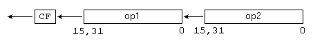
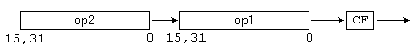

Команды SHLD и SHRD
Команды SHLD и SHRD выполняют побитовый сдвиг чисел вправо или влево. Принцип работы команд аналогичен командам SHL и SHR, однако в этих командах производится сдвиг чисел, состоящих из двух частей - старшей и младшей. Таким образом эти команды позволяют производить операции сдвига с 64-разрядными числами.
Команда SHLD
| Синтаксис: | SHLD op1,op2,op3 |
| Операнды: | op1 - r/m16, r/m32 op2 - r16, r32 op3 - i8, CL |
| Назначение: | Сдвиг влево двойной точности |
| Процессор: | 80386+ |
| Флаги: | Флаг OF изменяется только в случае сдвига на 1 бит - он устанавливается, если
изменилось значение старшего бита, и сбрасывается, если старший бит не изменился. Для
сдвигов на несколько бит, флаг OF неопределен. Флаг CF становится равным старшему биту операнда до выполнения сдвига. Флаги ZF, PF, SF устанавливаются в соответствии с результатом. Значение флага AF не определено. Если счетчик сдвига равен 0, то флаги не изменяются. |
| Комментарий: | Команда SHLD выполняет побитовый сдвиг первого операнда влево. Старший бит
операнда помещается во флаг CF. Все биты операнда сдвигаются влево на место старших битов. В
младший бит заносятся значения битов из второго операнда, который остается неизменным.
Величина сдвига определяется вторым операндом  У второго операнда учитываются только пять младших бит (значения от 0 до 31). |
| Ограничения: | Первый и второй операнд должны совпадать по разрядности. |
| Примеры: |
mov cx,03E2h shld ax,cx,4 jc l1 |
Команда SHRD
| Синтаксис: | SHRD op1,op2,op3 |
| Операнды: | op1 - r/m16, r/m32 op2 - r16, r32 op3 - i8, CL |
| Назначение: | Сдвиг вправо двойной точности |
| Процессор: | 80386+ |
| Флаги: | Флаг OF изменяется только в случае сдвига на 1 бит - он устанавливается, если
изменилось значение старшего бита, и сбрасывается, если старший бит не изменился. Для
сдвигов на несколько бит, флаг OF неопределен. Флаг CF становится равным старшему биту операнда до выполнения сдвига. Флаги ZF, PF, SF устанавливаются в соответствии с результатом. Значение флага AF не определено. Если счетчик сдвига равен 0, то флаги не изменяются. |
| Комментарий: | Команда SHRD выполняет побитовый сдвиг первого операнда вправо. Младший бит
операнда помещается во флаг CF. Все биты операнда сдвигаются вправо на место младших битов.
В Старший бит заносятся значения битов из второго операнда, который остается неизменным.
Величина сдвига определяется вторым операндом  У второго операнда учитываются только пять младших бит (значения от 0 до 31). |
| Ограничения: | Первый и второй операнд должны совпадать по разрядности. |
| Примеры: |
mov cx,03E2h shrd ax,cx,4 jc l1 |